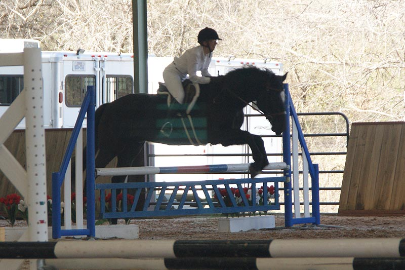

Combined Test at Willow Draw
It was a very blustery day. We were alone in the dressage warm up on the hill.
Most riders warmed up around the dressage ring, which made it a bit distracting
trying to enter at A.
Our dressage has been going gangbusters lately with a new dressage saddle.
Of course it's all a bit different in a test. I was clutchy and it took part of
the test
for me to relax and let him relax. Part way through he started reaching into the
bridle and
rounding up nicely. His trot work got very light and lovely. Our canter is always
improving
and I was very pleased with our right lead. I thought the scoring was a bit tough
(but fair)
and I believed the judge when she gave us a 7 on our walk. He's not been free across
the school,
but with the new saddle he seems to enjoy stretching out and moving.
We were 5th after dressage (8 horses I think). Our jumping warm up was enthusiastic.
In stadium we pulled the
first rail. We were so happy to be in a comfortable canter
that I forgot to
balance him until we were at the jump. He got in a little close and pulled it.
The rest of the course we were clean. We got more leads than in the past, but still
need to work on
landing on the lead I'd like. One roll back we had to come back to a trot as we
were getting tired,
but tooling around a course on him is fun.
There were others with refusals and we ended up in 5th place.
In the warm up alone on the hill.
It was nasty windy up there, and typically it's a part of the cross country course.
Still, he was very good and went to work pretty quickly.
Me gripping and tense on the entry.
Someday I'll learn to pull my shoulders back and stretch my leg down without being
told.
I must have started breathing here because he relaxed into frame and I knew we'd
be fine.
Energy, but not through and reaching into the bridle at this point.
Much better as we headed toward our next circle.
Heading toward our downward walk transition. He was so good. Usually we almost stop
and then walk on slowly. He did a smooth downward right into the walk. It could
have had a little more energy, but I think I was a little tense wondering if he'd
listen to my request and forgetting to relax myself once we had it.
Listening for the upward. Not rounding and lifting into it, but staying softer than
he has in the past.
Not a good canter transition to the left (and I forgot to stay on the circle for
a stride or two). I've been working to have smooth transitions where he stays round
without my holding him (holding then he braces). We've had a few at home and one
in the warm up. At least there wasn't a buck into the transition and it happens
when asked.
Downward not as balanced as we can be, but he goes soft and round almost immediately
now.
Pushing into the bridle with the length of rein I gave him. A little more belly
and back lift would be good.
Getting ready for the canter transition.
The judge said on the forehand and running. But she doesn't remember him last year
when he was also strung out.
I like that he's staying in frame the entire time.
Staying round and giving me a place to sit. Not the cool slow balanced canter I've
felt a time or two, but no fear that I won't be able to stop him.
I'm supposed to use my tummy muscles to stay upright and influence him at the canter
with my seat and back more than my legs. I might be doing that here.
Turn up the center line. We've been working on leg yielding off the center line
so we can get a bit wiggly heading toward the judge as he tries to figure out which
leg to move off of.
Learning how to land in a balanced halt. Nice and square.
We hadn't jumped in a month or so and he thought it had been too long.
I suspect this was set at training height looking at the tape marks. It looked a
little big to me but with Miaren there's no worry he's not going to try.
Third jump on course. I think my stirrups were a little long. Amanda was in the
saddle the day before for hunting and we did a lot of adjusting.

The jump at the scary end of the arena. Miaren said 'we're jumping', there's no
scary end of the arena today.
The roll back to six we just couldn't stay in a canter. I let him get a little strung
out, but he was fine. I didn't walk the course or I'd have noticed the roll top
part was out front, making the jump a fairly wide oxer. I wondered at the number
of stops I saw at this jump. That fan in the background wasn't on our course. Can't
wait til we're jumping the course where it is.
I got a little ahead on this jump. I tend to do that when I get tired. At least
I'm looking toward our next jump.
An in and out at the end. My trainer told me to let him choose his stride. We weren't
booking, but he was having fun and we did rub the last jump with him getting just
a little too close to it. We'd watched a few horses take it down, so I wondered
if it was a little tight between the two. Most likely they were like me and let
their horses pick up some speed around the corner and they were too forward coming
into it.
I love how much fun he looks like he's having. If he ever starts refusing we'll
know something's not right.